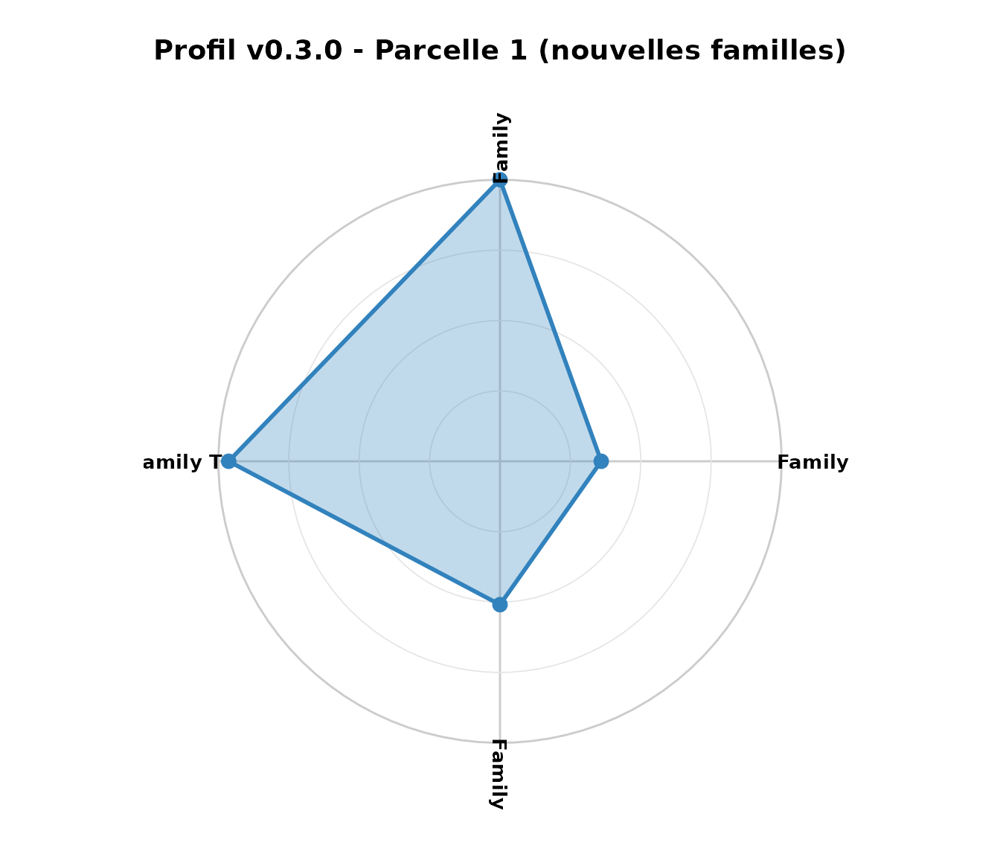
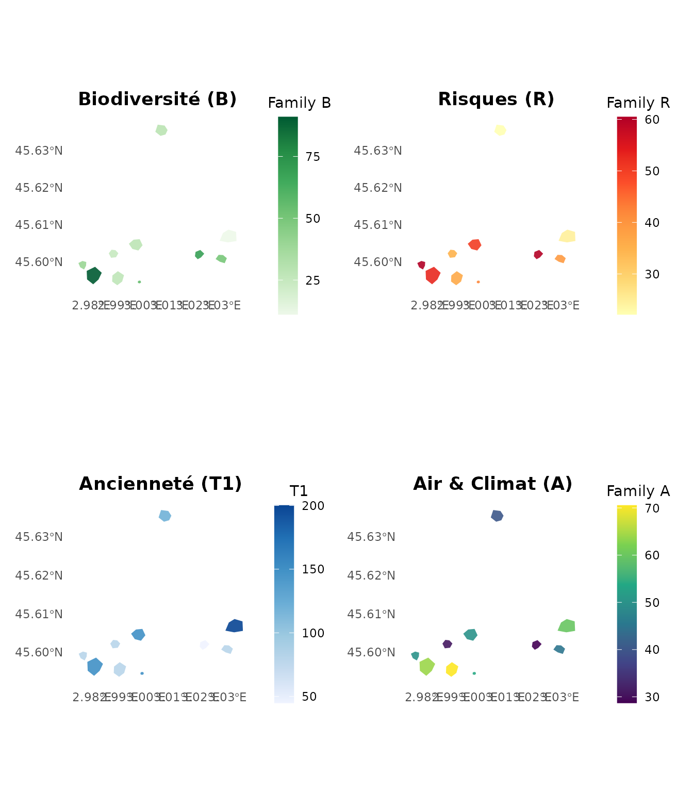

Biodiversité, Résilience & Services Climatiques (v0.3.0)
Pascal Obstétar
2026-01-09
Source:vignettes/biodiversity-resilience-v030_fr.Rmd
biodiversity-resilience-v030_fr.RmdIntroduction
La version 0.3.0 de nemeton étend le référentiel
d’indicateurs avec 4 nouvelles familles couvrant la
biodiversité, la résilience aux risques, les dynamiques temporelles et
les services climatiques. Cette vignette démontre l’utilisation des
10 nouveaux indicateurs (B1-B3, R1-R3, T1-T2, A1-A2) et
leur intégration dans des workflows multi-familles.
Données de démonstration
Nous utilisons les données massif_demo_units avec
quelques attributs synthétiques pour illustrer les nouveaux
indicateurs.
# Charger les données de démonstration
data(massif_demo_units)
units <- massif_demo_units[1:10, ]
# Ajouter des attributs synthétiques pour les exemples
set.seed(42)
units$strata <- sample(c("Emergent", "Dominant", "Intermediate", "Suppressed"),
10, replace = TRUE)
units$age_class <- sample(c("Young", "Intermediate", "Mature", "Old", "Ancient"),
10, replace = TRUE)
units$species <- sample(c("Quercus", "Fagus", "Pinus", "Abies"), 10, replace = TRUE)
units$age <- sample(c(45, 80, 120, 150, 200), 10, replace = TRUE)
units$height <- runif(10, 15, 30)
units$density <- runif(10, 0.6, 0.95)
# Créer des zones protégées synthétiques
bbox <- st_bbox(units)
zone1 <- st_buffer(st_geometry(st_centroid(units[2, ])), 250)
zone2 <- st_buffer(st_geometry(st_centroid(units[7, ])), 400)
protected_areas <- st_sf(
zone_id = c("ZNIEFF_001", "N2000_042"),
type = c("ZNIEFF", "Natura2000"),
geometry = c(zone1, zone2),
crs = st_crs(units)
)
# Créer un corridor écologique synthétique
corridor_geom <- st_linestring(cbind(
c(bbox["xmin"], bbox["xmax"]),
c(mean(c(bbox["ymin"], bbox["ymax"])), mean(c(bbox["ymin"], bbox["ymax"])))
))
corridor <- st_sf(
corridor_id = "TVB_001",
geometry = st_sfc(corridor_geom, crs = st_crs(units))
)Famille B : Biodiversité
B1 : Protection réglementaire
L’indicateur B1 calcule le pourcentage de surface en zones de protection.
result <- indicator_biodiversity_protection(
units,
protected_areas = protected_areas,
source = "local"
)
summary(result$B1)
#> Min. 1st Qu. Median Mean 3rd Qu. Max.
#> 0.00 0.00 0.00 22.46 18.43 100.00Interprétation : Les parcelles avec B1 > 50% bénéficient d’une protection significative.
B2 : Diversité structurelle
L’indicateur B2 mesure la diversité de Shannon à travers les strates, âges et essences.
result <- indicator_biodiversity_structure(
result,
strata_field = "strata",
age_class_field = "age_class",
species_field = "species",
method = "shannon",
weights = c(strata = 0.4, age = 0.3, species = 0.3)
)
summary(result$B2)
#> Min. 1st Qu. Median Mean 3rd Qu. Max.
#> 84.0 85.0 85.5 85.5 86.0 87.0B3 : Connectivité écologique
L’indicateur B3 évalue la proximité aux corridors écologiques.
result <- indicator_biodiversity_connectivity(
result,
corridors = corridor,
distance_method = "edge",
max_distance = 3000
)
summary(result$B3)
#> Min. 1st Qu. Median Mean 3rd Qu. Max.
#> 721.7 1323.4 1566.1 1559.2 1927.8 2242.6Famille R : Risques & Résilience
R1, R2, R3 : Risques combinés
Les indicateurs de risque évaluent les vulnérabilités aux
perturbations. Note: Dans cette vignette, nous simulons les valeurs.
Pour un usage réel, utilisez les fonctions
indicator_risk_fire(), indicator_risk_storm()
et indicator_risk_drought() avec des données DEM et
climatiques.
# Simulation des indicateurs de risque
# (Dans un cas réel, utiliser les fonctions avec DEM et données climatiques)
set.seed(43)
result$R1 <- pmin(100, pmax(0, 40 + runif(10, -20, 30))) # Risque incendie
result$R2 <- pmin(100, pmax(0, 45 + runif(10, -25, 35))) # Vulnérabilité tempête
result$R3 <- pmin(100, pmax(0, 35 + runif(10, -15, 40))) # Stress hydrique
# Les pins en pente ont plus de risque incendie
result$R1[result$species == "Pinus"] <- result$R1[result$species == "Pinus"] * 1.3
result$R1 <- pmin(100, result$R1)
# Les peuplements hauts/denses ont plus de risque tempête
result$R2 <- result$R2 * (result$height / 22) * (result$density / 0.8)
result$R2 <- pmin(100, result$R2)
summary(result[, c("R1", "R2", "R3")])
#> R1 R2 R3 geometry
#> Min. :29.15 Min. :19.16 Min. :20.55 POLYGON :10
#> 1st Qu.:37.82 1st Qu.:28.72 1st Qu.:31.86 epsg:2154 : 0
#> Median :46.24 Median :30.68 Median :47.03 +proj=lcc ...: 0
#> Mean :48.88 Mean :38.88 Mean :48.04
#> 3rd Qu.:54.94 3rd Qu.:47.93 3rd Qu.:65.54
#> Max. :82.70 Max. :71.67 Max. :73.04Famille T : Dynamique Temporelle
T1 : Ancienneté
L’indicateur T1 mesure l’âge des peuplements.
# Utiliser les âges déjà définis
result$T1 <- result$age # Directement l'âge en années
summary(result$T1)
#> Min. 1st Qu. Median Mean 3rd Qu. Max.
#> 45.0 80.0 100.0 113.5 150.0 200.0T2 : Changements d’occupation
L’indicateur T2 détecte les transformations.
Note: Utiliser indicator_temporal_change() avec des
rasters Corine Land Cover multi-dates pour un usage réel.
Famille A : Air & Microclimat
A1 : Couverture arborée
L’indicateur A1 mesure le % de couverture arborée
dans un buffer de 1km. Note: Utiliser
indicator_air_coverage() avec un raster de végétation pour
un usage réel.
A2 : Qualité de l’air
L’indicateur A2 évalue la qualité de l’air.
Note: Utiliser indicator_air_quality() avec des données
ATMO ou sources de pollution pour un usage réel.
Workflow Multi-Familles v0.3.0
Normalisation et agrégation
Normalisons tous les indicateurs et créons les indices par famille.
# Normaliser tous les nouveaux indicateurs
result_norm <- normalize_indicators(
result,
indicators = c("B1", "B2", "B3", "R1", "R2", "R3", "T1", "T2", "A1", "A2"),
method = "minmax"
)
# Créer les indices composites par famille
result_norm <- create_family_index(
result_norm,
family_codes = c("B", "R", "T", "A"),
method = "mean"
)
# Afficher les indices par famille
result_norm |>
st_drop_geometry() |>
select(parcel_id, family_B, family_R, family_T, family_A) |>
head()
#> parcel_id family_B family_R family_T family_A
#> 1 P01 39.80832 60.45303 61.29032 50.00000
#> 2 P02 68.82910 60.02550 17.62303 28.71851
#> 3 P03 49.84050 39.18232 44.71207 44.90653
#> 4 P04 29.08790 22.14935 62.47047 40.25588
#> 5 P05 24.27117 34.80352 11.29032 30.80376
#> 6 P06 55.55556 42.09048 41.69098 54.08198Agrégation conservative (méthode “min”)
Pour les risques, utilisons la méthode “min” (pire cas) :
# Agrégation conservative pour la famille Risques
result_risk_min <- create_family_index(
result_norm,
family_codes = "R",
method = "min" # Score = pire indicateur
)
# Comparer méthodes "mean" vs "min"
comparison <- result_norm |>
st_drop_geometry() |>
select(parcel_id, R1_norm, R2_norm, R3_norm, family_R) |>
mutate(
risk_min = pmin(R1_norm, R2_norm, R3_norm)
) |>
head()
comparison
#> parcel_id R1_norm R2_norm R3_norm family_R risk_min
#> 1 P01 28.205045 53.15405 100.00000 60.45303 28.205045
#> 2 P02 67.956914 21.54089 90.57869 60.02550 21.540886
#> 3 P03 1.120893 100.00000 16.42606 39.18232 1.120893
#> 4 P04 48.780961 17.66709 0.00000 22.14935 0.000000
#> 5 P05 12.187465 55.34306 36.88004 34.80352 12.187465
#> 6 P06 33.620254 77.29592 15.35528 42.09048 15.355282Interprétation : La méthode “min” identifie le facteur limitant (risque le plus élevé).
Visualisation Radar Multi-Axes
Radar à 4 familles (nouvelles v0.3.0)
Visualisons le profil écosystémique d’une parcelle avec les 4 nouvelles familles :
# Radar pour une parcelle (4 nouvelles familles)
nemeton_radar(
result_norm,
unit_id = 1,
mode = "family",
title = "Profil v0.3.0 - Parcelle 1 (nouvelles familles)"
)
Radar complet avec toutes les familles disponibles
Pour voir l’ensemble des services écosystémiques, ajoutons aussi les familles v0.2.0 existantes :
# Ajouter quelques indicateurs des familles existantes pour démonstration
result_norm$C1 <- runif(10, 40, 90) # Carbon biomass
result_norm$W1 <- runif(10, 30, 80) # Water network
result_norm$F1 <- runif(10, 35, 85) # Soil fertility
result_norm$L1 <- runif(10, 25, 75) # Landscape fragmentation
# Normaliser
result_norm <- normalize_indicators(
result_norm,
indicators = c("C1", "W1", "F1", "L1"),
method = "minmax"
)
# Créer indices familles existantes
result_complete <- create_family_index(
result_norm,
family_codes = c("C", "W", "F", "L"),
method = "mean"
)
# Radar complet : 8 familles
nemeton_radar(
result_complete,
unit_id = 1,
mode = "family",
title = "Profil écosystémique complet - Parcelle 1 (8 familles)"
)Comparaison de parcelles (NOUVEAU v0.3.0)
La v0.3.0 introduit le mode comparaison pour visualiser plusieurs parcelles simultanément :
# Comparer 3 parcelles sur le même radar
nemeton_radar(
result_complete,
unit_id = c(1, 5, 8),
mode = "family",
title = "Comparaison de 3 parcelles - 8 familles"
)
Utilisation : Identifiez rapidement les parcelles à haute biodiversité (famille B) mais forte vulnérabilité (famille R).
Analyses Thématiques
Hotspots biodiversité + ancienneté
Identifier les forêts anciennes à haute valeur écologique :
hotspots_bio <- result_complete |>
filter(family_B > 60, T1 > 100) |>
arrange(desc(family_B))
cat("Forêts anciennes à haute biodiversité :", nrow(hotspots_bio), "parcelles\n")
#> Forêts anciennes à haute biodiversité : 1 parcelles
# Afficher les parcelles identifiées
if(nrow(hotspots_bio) > 0) {
hotspots_bio |>
st_drop_geometry() |>
select(parcel_id, family_B, T1, family_R) |>
head()
}
#> parcel_id family_B T1 family_R
#> 1 P07 90.94836 150 52.78104Parcelles vulnérables multi-risques
Détecter les parcelles cumulant plusieurs risques :
multi_risques <- result_complete |>
mutate(
nb_risques = (R1_norm > 60) + (R2_norm > 60) + (R3_norm > 60)
) |>
filter(nb_risques >= 2) |>
arrange(desc(nb_risques))
cat("Parcelles à risques multiples (≥2) :", nrow(multi_risques), "\n")
#> Parcelles à risques multiples (≥2) : 1
# Détail des risques
if(nrow(multi_risques) > 0) {
multi_risques |>
st_drop_geometry() |>
select(parcel_id, R1_norm, R2_norm, R3_norm, nb_risques, family_R) |>
head()
}
#> parcel_id R1_norm R2_norm R3_norm nb_risques family_R
#> 1 P02 67.95691 21.54089 90.57869 2 60.0255Services climatiques urbains
Évaluer le potentiel de régulation climatique :
services_climat <- result_complete |>
filter(A1 > 70, A2 > 70) |>
arrange(desc(family_A))
cat("Parcelles à fort potentiel climatique :", nrow(services_climat), "\n")
#> Parcelles à fort potentiel climatique : 1
if(nrow(services_climat) > 0) {
services_climat |>
st_drop_geometry() |>
select(parcel_id, A1, A2, family_A) |>
head()
}
#> parcel_id A1 A2 family_A
#> 1 P08 70.51631 78.73541 70.51087Cartographie Multi-Critères
Visualisons les indices composites pour les nouvelles familles :
library(patchwork)
p_bio <- plot_indicators_map(result_complete, indicator = "family_B",
palette = "Greens", title = "Biodiversité (B)")
p_risk <- plot_indicators_map(result_complete, indicator = "family_R",
palette = "YlOrRd", title = "Risques (R)")
p_temp <- plot_indicators_map(result_complete, indicator = "T1",
palette = "Blues", title = "Ancienneté (T1)")
p_air <- plot_indicators_map(result_complete, indicator = "family_A",
palette = "viridis", title = "Air & Climat (A)")
(p_bio + p_risk) / (p_temp + p_air)
Tableau récapitulatif
Vue d’ensemble des indicateurs calculés :
# Résumé des 10 nouveaux indicateurs v0.3.0
summary_table <- result_complete |>
st_drop_geometry() |>
select(parcel_id,
# Biodiversité
B1, B2, B3, family_B,
# Risques
R1, R2, R3, family_R,
# Temporel
T1, T2, family_T,
# Air
A1, A2, family_A) |>
head(5)
summary_table
#> parcel_id B1 B2 B3 family_B R1 R2 R3 family_R
#> 1 P01 24.5782 85 1657.262 39.80832 44.25188 47.07114 73.04010 60.45303
#> 2 P02 100.0000 86 1327.328 68.82910 65.53830 30.47225 68.09509 60.02550
#> 3 P03 0.0000 87 1474.873 49.84050 29.74880 71.66821 29.17421 39.18232
#> 4 P04 0.0000 84 2048.908 29.08790 55.26992 28.43826 20.55258 22.14935
#> 5 P05 0.0000 85 1322.150 24.27117 35.67475 48.22051 39.90999 34.80352
#> T1 T2 family_T A1 A2 family_A
#> 1 80 18.5854441 61.29032 74.83550 62.37394 50.00000
#> 2 45 7.0717841 17.62303 57.46452 64.73451 28.71851
#> 3 80 12.6900074 44.71207 53.25070 78.35990 44.90653
#> 4 120 14.4165688 62.47047 60.81278 68.82518 40.25588
#> 5 80 0.8048135 11.29032 59.36794 64.32505 30.80376Conclusion
La version 0.3.0 de nemeton apporte :
- ✅ 10 nouveaux indicateurs (B1-B3, R1-R3, T1-T2, A1-A2)
- ✅ 4 nouvelles familles (Biodiversité, Risques, Temps, Air)
- ✅ 8 familles sur 12 maintenant implémentées (avec données complètes)
- ✅ Méthode d’agrégation “min” pour analyses de risque
- ✅ Mode comparaison pour radars multi-parcelles
- ✅ 845+ tests avec 87.35% de couverture
Prochaines étapes (v0.4.0) :
- Familles S (Social), P (Production), E (Énergie), N (Naturalité)
- Analyses d’incertitude Monte Carlo
- Intégration avancée de données externes
Ressources :
- Vignette “Familles d’indicateurs” : référentiel complet des 12 familles
- Vignette “Analyse temporelle” : workflows multi-périodes
- Documentation API :
?indicator_biodiversity_protection,?nemeton_radar, etc.